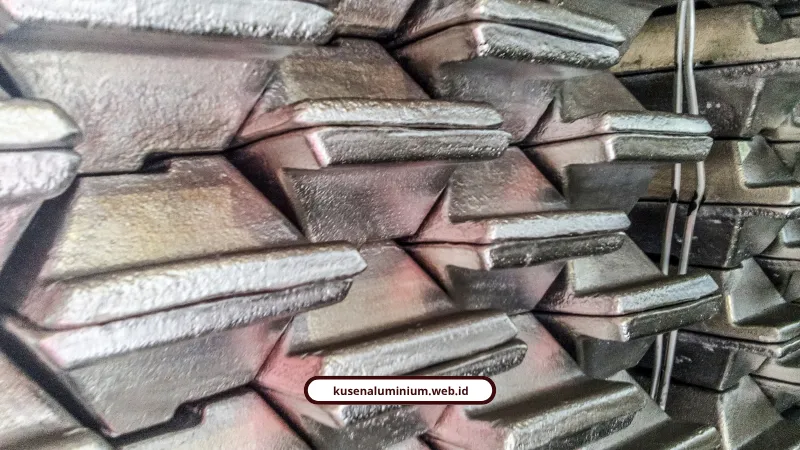

Standar Material Aluminium yang Kami Gunakan: Ketebalan, Ketahanan, Kualitas

📌 Ringkasan Inti
Standar material kami dalam memilih material kusen aluminium mengacu pada regulasi teknis arsitektural dan struktural ketat untuk menjamin kekuatan, kestabilan, serta durabilitas jangka panjang:
- Standar ketebalan profil aluminium presisi 1,2 mm hingga 3,0 mm sesuai fungsi bukaan jendela, pintu geser, maupun fasad komersial.
- Penggunaan paduan alloy arsitektural 6063-T5/T6 untuk profil ekstrusi halus rapi dan alloy 6061 untuk kekuatan struktural berat.
- Jaminan bahan bersertifikat SNI, JIS, dan ASTM dari fasilitas ISO 9001 yang terverifikasi menggunakan spectrometer.
- Tingkat ketahanan korosi kusen teruji kabut garam Salt Spray Test (ASTM B117) bebas karat hingga 50 tahun dan lolos uji tarik Universal Testing Machine (UTM).
- Keunggulan struktural tambahan mencakup ketahanan gempa (SNI 1726:2019), ketahanan api 660°C, serta efisiensi isolasi termal hemat energi AC.
Dalam standar material kami, material kusen aluminium yang digunakan wajib memenuhi ketebalan profil aluminium presisi mulai 1,2 mm sampai 3,0 mm sesuai fungsinya, memakai paduan alloy 6063 atau 6061 bersertifikat, serta memiliki tingkat ketahanan korosi kusen berstandar internasional. Acuan kualitas ini menentukan apakah bukaan bangunan Anda akan kokoh puluhan tahun atau justru mengalami deformasi dalam hitungan bulan.
Kenapa Ketebalan Aluminium Sepenting Itu?
Karena ketebalan profil berbanding lurus dengan kekuatan struktur dan kemampuan menahan tekanan angin serta beban kaca. Semakin tipis profilnya, semakin gampang melengkung saat menerima beban.
Berikut gambaran ketebalan ideal berdasarkan fungsinya:
- 1,0 mm: cocok untuk jendela kecil atau area interior yang mengutamakan efisiensi biaya.
- 1,2 mm: standar ideal untuk jendela utama rumah tinggal, seimbang antara harga dan kestabilan.
- 1,4 mm sampai 1,5 mm: direkomendasikan untuk pintu geser, pintu utama, atau bukaan dengan frekuensi pemakaian tinggi supaya tidak deformasi.
- 2,0 mm: dipakai di bangunan komersial skala menengah seperti perkantoran dan apartemen untuk menopang beban kaca lebih berat.
- 2,5 mm sampai 3,0 mm: wajib untuk hotel, pusat perbelanjaan, dan fasad kaca lebar (curtain wall) yang terpapar tekanan angin kencang di ketinggian.
Nizwa Rizqin Qinthara, penulis dan spesialis spesifikasi produk, menjelaskan bahwa ketebalan profil kusen aluminium berbanding lurus dengan kekuatan struktur bangunan. Untuk rumah tinggal, ketebalan ideal berkisar 1,0 sampai 1,5 mm, dengan 1,2 sampai 1,5 mm dianjurkan untuk pintu dan bukaan besar, sementara bangunan komersial atau fasad lebar butuh 2,0 sampai 3,0 mm untuk menahan beban kaca dan angin ekstrem.
Risikonya kalau memakai ketebalan di bawah standar cukup nyata, profil jadi gampang bengkok atau melengkung saat menerima tekanan beban maupun angin kencang.

Alloy Apa yang Dipakai untuk Profil Kusen Berkualitas?
Dua jenis alloy yang jadi standar industri adalah 6063 dan 6061, dan keduanya punya karakter berbeda. Alloy 6063 lebih umum dipakai untuk kusen karena hasil ekstrusinya halus dan rapi.
- Alloy 6063 (standar arsitektural): paduan aluminium, magnesium, dan silikon dengan kemampuan ekstrusi sangat baik, permukaan halus, dan hasil finishing anodizing atau powder coating yang bersih merata. Kekuatan tarik tipikalnya di rentang 145 sampai 186 MPa.
- Alloy 6061 (standar struktural berat): dipilih untuk komponen yang menanggung beban struktural terhitung atau butuh proses permesinan intensif. Kekuatan tariknya lebih tinggi, 124 sampai 290 MPa, tapi hasil permukaannya kurang ideal untuk fungsi dekoratif terekspos.
Kode temper T5 dan T6 juga penting diperhatikan. Keduanya menunjukkan proses perlakuan panas, dan temper T6 melalui proses pelarutan serta penuaan buatan sehingga menghasilkan kekuatan mekanis lebih tinggi dibanding T5.
Material berkualitas tinggi menggunakan ingot atau billet berstandar ASTM, JIS, atau SNI dari fasilitas produksi bersertifikat ISO 9001 yang diverifikasi memakai instrumen spectrometer. Standar penggunaan alloy dan ketebalan ini yang jadi acuan kami saat menentukan spesifikasi di setiap proyek jasa pasang kusen aluminium yang kami kerjakan.
Konsultasi Spesifikasi & Pemilihan Material Kusen Aluminium Presisi
Dapatkan rekomendasi ketebalan profil (1.2mm - 1.4mm) dan alloy yang paling sesuai untuk hunian Anda di Malang Raya, bebas biaya survei awal dan RAB transparan.
Bagaimana Material Ini Diuji Kekuatannya?
Diuji lewat uji tarik atau tensile test yang mengukur batas gaya maksimum sebelum material deformasi atau patah. Pengujian ini memakai mesin Universal Testing Machine (UTM) berdasarkan standar ASTM E8/E8M atau ISO 6892.
Secara umum, aluminium punya rentang Ultimate Tensile Strength (UTS) sebesar 90 sampai 570 MPa. Pada pengujian laboratorium spesifik untuk paduan aluminium cor seperti A356, formulasi yang tepat bisa menghasilkan kekuatan tarik hingga 228,22 MPa dengan Yield Strength 215,65 MPa.
Wahyu Sutisna, spesialis pengujian material dan NDT, menegaskan bahwa pengujian kekuatan tarik memakai UTM berstandar ASTM/ISO sangat krusial. Tanpa mengetahui nilai kekuatan tarik material secara presisi, proses perencanaan konstruksi seperti menebak dalam gelap yang berpotensi memicu kegagalan struktur secara fatal.
Peneliti dari Departemen Teknik Mesin Universitas Pancasila, yaitu Martua Manik, Indra Chandra Setiawan, dan Dwi Rahmalina, juga menyatakan berdasarkan pengujian laboratorium yang mengacu standar ASTM B26/B108 dan ASTM E8, kontrol komposisi unsur kimia dan kerapatan struktur mikro mampu mendongkrak UTS hingga 228,22 MPa serta daya tahan impak 6,18 J/cm².
Ini memverifikasi bahwa pengujian lab yang ketat adalah kunci material aman dan sesuai standar mutu.
Seberapa Tahan Material Ini Terhadap Korosi?
Sangat tahan, karena aluminium secara alami membentuk lapisan oksida pelindung yang mencegah karat hingga 50 tahun atau lebih, bahkan di daerah pesisir. Tingkat ketahanan korosi kusen ini makin optimal berkat proteksi tambahan finishing seperti powder coating atau anodizing bersertifikasi.
Beberapa standar pengujian laboratorium untuk ketahanan korosi yang jadi acuan industri:
- Salt Spray Test (ASTM B117): uji kabut garam 5 persen NaCl dalam ruang tertutup untuk mengukur ketahanan lapisan terhadap korosi pitting.
- CASS Test: pengujian korosi dipercepat memakai tembaga klorida dan asam asetat untuk mensimulasikan lingkungan berpolusi tinggi atau pesisir ekstrem.
- Seal Quality Test (ISO 2143): uji penetrasi warna untuk memastikan pori-pori lapisan anodize tertutup rapat.
- Coating Thickness Test (ASTM B244/B137): memastikan ketebalan mikron lapisan pelindung sesuai spesifikasi.
Penina Dewayani, spesialis material bangunan properti, menyebut aluminium untuk proyek properti wajib memenuhi ketebalan minimal 1,2 mm sampai 2,0 mm sesuai fungsinya, memakai alloy grade 6061 atau 6063 bersertifikasi SNI/ASTM/JIS, serta dilindungi lapisan finishing anodized atau powder coating agar tahan cuaca tropis.
"Menentukan material aluminium bukan sekadar mencari yang tahan karat, tapi memastikan ketebalan dan paduan alloy-nya lolos uji mekanis sehingga sanggup menahan beban gempa dan terpaan angin puluhan tahun ke depan."
Apa Kelebihan Lain dari Aluminium Selain Anti Korosi?
Aluminium juga punya keunggulan tahan gempa, tahan api, dan efisiensi termal yang jarang disadari orang awam. Bobotnya hanya sekitar sepertiga dari baja, sehingga mengurangi beban struktur bangunan.
- Tahan gempa: densitas rendah membuatnya fleksibel terhadap getaran gempa sesuai standar SNI 1726:2019.
- Tahan api: tidak terbakar dan punya titik leleh 660°C, di atas suhu kebakaran rumah biasa yang sekitar 600°C, dengan sertifikasi fire-rated ASTM.
- Efisiensi termal: sistem isolasi thermal break pada profil jendela aluminium dapat menghemat konsumsi energi AC hingga 25 persen.
Kalau Anda ingin melihat langsung bagaimana standar material di atas diterapkan dalam pengerjaan nyata di lapangan, silakan cek jasa pasang kusen aluminium kami yang sudah menangani ratusan bukaan di Malang Raya.
Kesimpulan
Standar material kusen aluminium yang benar bukan cuma soal "aluminium itu tahan karat", tapi menyangkut ketebalan profil aluminium yang sesuai fungsi, jenis alloy, kode temper, hingga tingkat ketahanan korosi kusen yang terbukti lewat hasil uji laboratorium. Semua parameter teknis inilah yang menjadi standar material kami sebelum unit dirakit dan sampai ke tangan aplikator di lapangan.
Kalau Anda butuh kepastian material yang dipakai di proyek Anda sesuai standar ini, tim kami siap konsultasi gratis. Anda juga bisa lihat contoh hasil pengerjaan kami di galeri proyek sebelum memutuskan spesifikasi yang paling pas untuk kebutuhan Anda.
FAQ Seputar Material Kusen Aluminium
Alloy 6063 punya hasil ekstrusi lebih halus dan cocok untuk kusen serta partisi dekoratif, sedangkan alloy 6061 punya kekuatan tarik lebih tinggi tapi permukaannya kurang ideal untuk fungsi dekoratif terekspos. Alloy 6063 lebih umum dipakai untuk kusen rumah tinggal.
Cukup aman untuk jendela kecil di area interior, tapi untuk jendela utama sebaiknya minimal 1,2 mm agar lebih stabil menahan beban angin dan kaca. Untuk pintu geser atau bukaan besar, disarankan naik ke 1,4 mm sampai 1,5 mm.
Aluminium bisa bertahan tanpa berkarat hingga 50 tahun atau lebih berkat lapisan oksida pelindung alaminya, bahkan di daerah pesisir. Ketahanan ini bisa makin maksimal dengan tambahan finishing anodizing atau powder coating berkualitas.